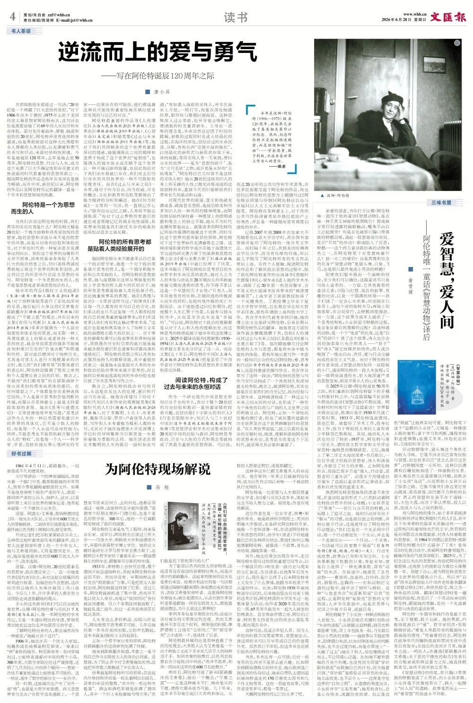
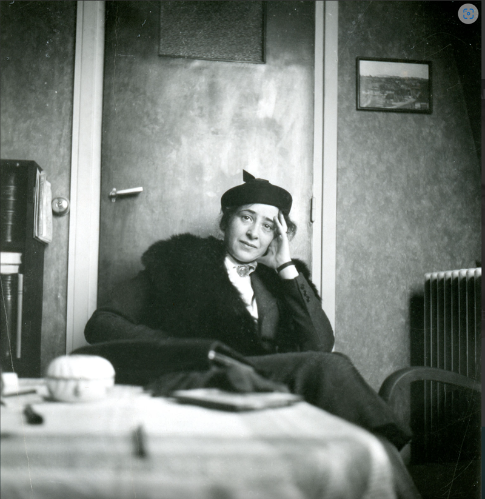
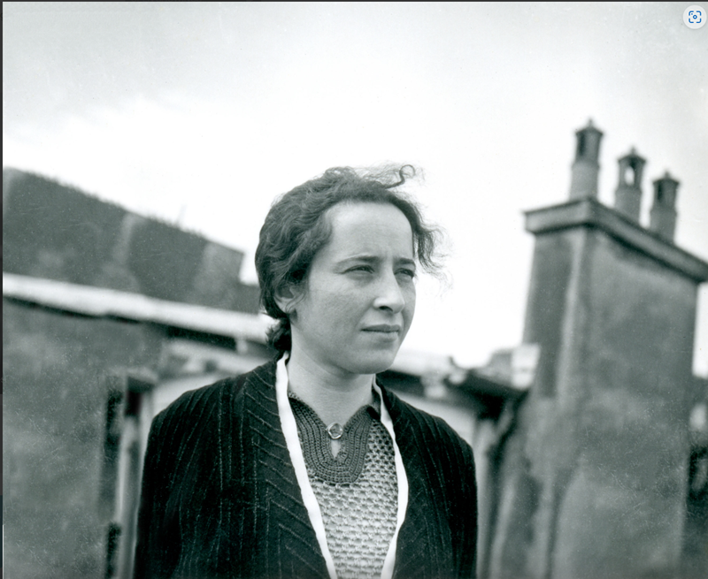
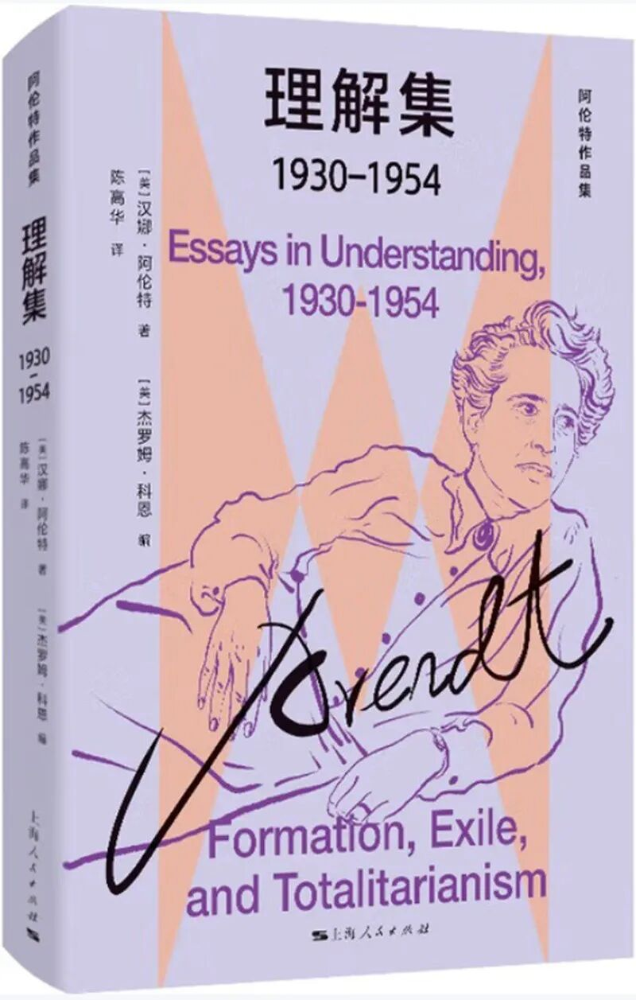
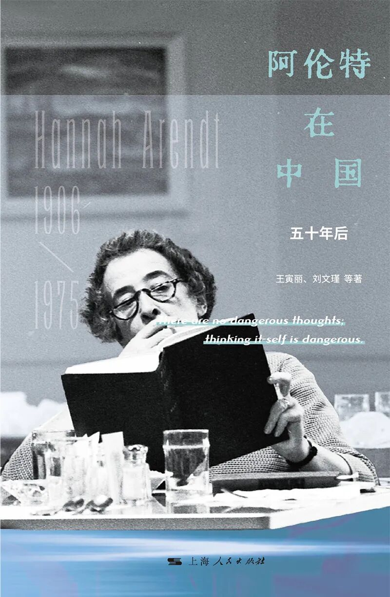
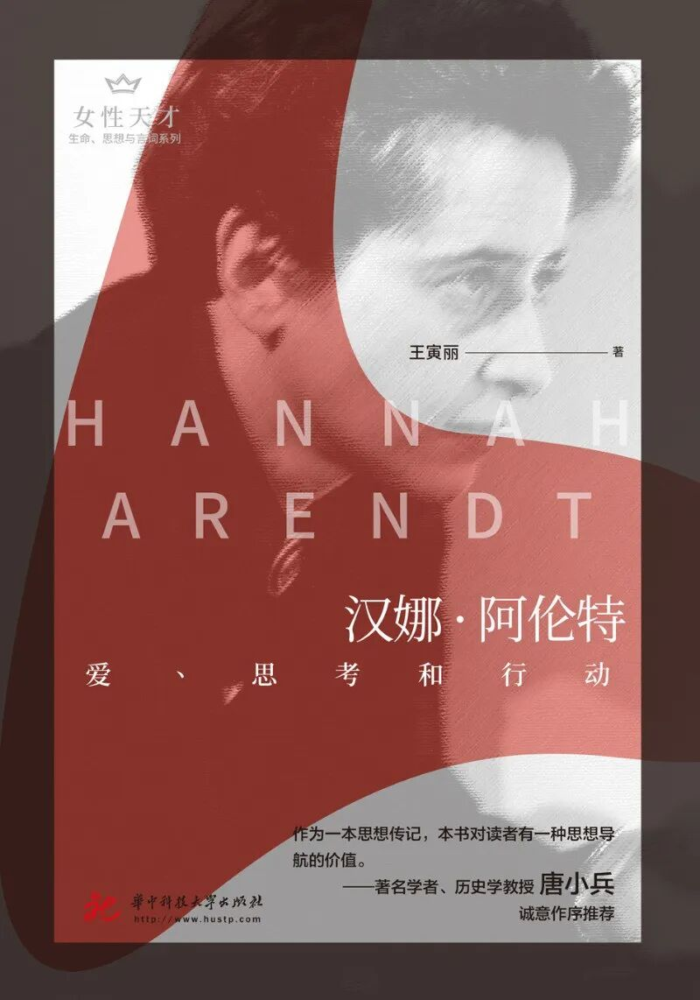

逆流而上的爱与勇气——写在阿伦特诞辰120周年之际
逆流而上的爱与勇气——写在阿伦特诞辰120周年之际
摘要
摘要：逆流而上的爱与勇气——写在阿伦特诞辰120周年之际
作者：唐小兵 来源：文汇读书周报
一句话总结
（请用一句话概括全文主旨。提示：可结合下方"文章核心问题"与"主要观点"得出。）
文章核心问题
（作者试图回答的中心问题是什么？例如"在 X 条件下，Y 应当如何 Z"。请人工补充。）
主要观点
- 《文汇报》第四版读书
2026年6月28日
- 逆流而上的爱与勇气
——写在阿伦特诞辰120周年之际
- 今年是汉娜·阿伦特（1906—1975）诞辰120周年，出版界已出版了各类相关著作以示纪念。
- 然而，纪念阿伦特不是把她供进殿堂，而是继续和她“对话”——学会思考，敢于判断，不放弃在世界上作为人的责任。
- 齐邦媛教授生前说过一句话：“20世纪是一个埋藏了巨大悲伤的世纪。
- ”对于1906年出生于德国、1975年去世于美国的犹太裔思想家阿伦特而言，这句话也恰是高度浓缩了其69年的人生经历和生命体验。
论证结构
文章的结构骨架（按小标题还原）：
（未检测到小标题；请人工补充）
关键概念
年出版、阿伦特、上海人民出版、阿伦特的思想、过去与未来之、译林出版社、换言之、周年
背景补充
（作者写作时的时代/行业/学术背景，以及读者需要的前置知识。请人工补充。）
值得摘录的句子
- 《文汇报》第四版读书
2026年6月28日
- 逆流而上的爱与勇气
——写在阿伦特诞辰120周年之际
- 今年是汉娜·阿伦特（1906—1975）诞辰120周年，出版界已出版了各类相关著作以示纪念。
- 然而，纪念阿伦特不是把她供进殿堂，而是继续和她“对话”——学会思考，敢于判断，不放弃在世界上作为人的责任。
- 齐邦媛教授生前说过一句话：“20世纪是一个埋藏了巨大悲伤的世纪。
- ”对于1906年出生于德国、1975年去世于美国的犹太裔思想家阿伦特而言，这句话也恰是高度浓缩了其69年的人生经历和生命体验。
与知识库已有条目的可能关联
（这篇和 KB 里已有的哪些条目主题相近、观点互补或对立？请人工或检索后补充。）
个人阅读提示：这篇文章为什么值得保存
（一句话说明你保存它的理由——是为了某个论点、某个案例、还是某种写法。请人工补充。）
附：首段原文（用于校对）

正文 / 中文原文
逆流而上的爱与勇气——写在阿伦特诞辰120周年之际
作者：唐小兵
来源：文汇读书周报
发布日期：2026-06-28
原文链接：https://mp.weixin.qq.com/s/3YC72QkVirX7AJpl58cnow
《文汇报》第四版读书 2026年6月28日
书人茶话
逆流而上的爱与勇气 ——写在阿伦特诞辰120周年之际
唐小兵
今年是汉娜·阿伦特（1906—1975）诞辰120周年，出版界已出版了各类相关著作以示纪念。然而，纪念阿伦特不是把她供进殿堂，而是继续和她“对话”——学会思考，敢于判断，不放弃在世界上作为人的责任。 ——编者

汉娜·阿伦特
齐邦媛教授生前说过一句话：“20世纪是一个埋藏了巨大悲伤的世纪。”对于1906年出生于德国、1975年去世于美国的犹太裔思想家阿伦特而言，这句话也恰是高度浓缩了其69年的人生经历和生命体验。面对充斥着战争、屠戮、隔离和创伤的20世纪，阿伦特并没有选择转身遁离，而是勇敢地面对这种无比黑暗和令人费解的人类经验，以充满爱和勇气的书写和行动，来面对结构性困境。今年是她诞辰120周年，去年是她去世50周年，阿伦特的思想、行动与人生，成为这个充满了巨大不确定性和存在意义的焦虑感的时代最重要的思想资源之一。据说阿伦特的作品这些年在美国也是极为畅销，而在中国，新世纪以来，阿伦特的作品以及阿伦特传记的翻译一直是一个学术和思想领域的热潮。
阿伦特是一个为思想而生的人
当我们在谈论阿伦特的时候，我们真实的关切究竟是什么？阿伦特无疑是20世纪一个极为独特和具有原创性的思想家，她的思想和言说从来不是经院哲学的风格，而是从切身的经验和体验出发，对于所处时代的一种复杂甚至充满争议的回应。指控这个世界的血腥和不义并不困难，困难的是亲身体验了人类巨大的政治伤害之后，仍旧选择真诚而勇敢地正视这个世界的阴影和创伤，并且将自己的所思所行沉淀为思想的书写。阿伦特是一个为思想而生的人，而不是靠思想或者表演思想而活的人。
她早年的作品《极权主义的起源》 （生活·读书·新知三联书店2014年出版） 对于纳粹体制等进行了系统而深刻的反思，她引起巨大争议的《艾希曼在耶路撒冷》 （译林出版社2017年出版） 则提出了“平庸之恶”的观念，并在后来的文集《责任与判断》 （上海人民出版社2014年出版） 里多次强调当一个人面对制度性和体系性的罪恶，而采取一种工具理性意义上的服从或者保持一种无思的状态，就会导致罪恶的链条不能被良知和常识引发的“价值决断”所阻遏和终结。面对战后德国对于纳粹历史，尤其是对犹太人进行大规模屠杀的历史时，高亢的“我们都有罪”的集体意识和表达时，阿伦特却强调了罪责之审判和个人道德反省之间的区别。换言之，不能用“我们都有罪”的言辞取消掉个体应该承担的真实而具体的惩罚。在任何情景之下，个体都是存在某种选择空间的，个人是展开思考和价值判断的终端，而服从在某种意义上就是支持暴政体制的表现。她在《思考与道德关切》一文里曾掷地有声地写道：“思考活动作为人生的一种自然需要和意识中的差异的具体化，它不是少数人的特权，而是每一个人永远可运用的能力；同样，不能思考也不是那些缺乏脑力的众人的‘特权’，而是每一个人——科学家、学者，包括其他从事心理研究的专家——经常存在的可能性，他们都逃避这种其可能性和重要性被苏格拉底首次发现的与自己的对话。”
阿伦特最重要的作品有《人的境况》 （上海人民出版社2021年出版） 、《论革命》 （译林出版社2019年出版） 、《心智生命》（未完成）和随笔集《过去与未来之间》 （译林出版社2011年出版） 等，她对于我们共同栖身的这个世界有着最深切的情感，她强调彼此之间的羁绊和连带才构成了这个世界的“复数性”，也强调人的诞生性永远在赋予这个世界以一种开端启新的能量，也因此指出对于我们出生前就已存在、我们死去后仍旧存在的共同世界的一种不可推卸的伦理责任。而在《过去与未来之间》一书里，她对于何为自由、何为权威、历史的概念、文化和教育的危机等都做出了极为精辟的分析和阐述。她在《何为权威》一文里的一句话，我一直铭记在心头：“除非经由记忆之路，人类将不能达到纵深。”而对于过去事物的有意识的遗忘或者黑暗记忆的被系统性清除，其实带来的就是我们依托生存的地基的摇晃松动甚至土崩瓦解。

汉娜·阿伦特
阿伦特的所有思考都是贴着人类经验展开的
据说阿伦特从来不愿意承认自己是一个政治哲学家，她是一个对于政治现象展开思考的哲人，是一个倡导积极生活和公共实践的人。在阿伦特的思想底色里，她与海德格尔这样从事抽象的形而上学思考的哲人最大的区别在于，她的所有思考都是贴着人类经验展开的，因此她重视事实的真理。她在《真理与政治》一文里曾这样写过：“即使我们承认每一代人都有权书写自己的历史，我们承认的也只不过是每一代人都有权按照自己的视角重新编排事实；我们并没有承认我们有权利去触动事实本身。”这或许也是她和真实地介入了纳粹主义实践的海德格尔最大的区别之一。对于事实的解释如果可以脱离事实和真相而展开，那弥漫在历史时空里的就只能是越来越含混的意识形态迷雾和浮嚣浅薄的情绪而已。阿伦特的思想之所以具有如此强烈而持久的解释效能，其中重要的因素之一就是她永远是面对人类的生命和政治经验的事实来展开思考的，而且她将自身被迫逃离祖国的生命经验也接引到了学术思考和写作之中。
换言之，阿伦特的政治书写的背后，永远是在关注人的处境、意识和行动乃至命运。她饱含深情写下的对于同时代知识人和作家的观察随笔集《黑暗时代的人们》 （湖南人民出版社2024年出版） ，对于本雅明、卡夫卡、布莱希特、雅斯贝尔斯、罗莎·卢森堡等人的思想、写作和人生有着极为精彩入微的书写，尤其对于她在海德堡大学攻读博士学位时的导师雅斯贝尔斯更是一生都怀着极为崇敬的认同。她在讲述其朋友本雅明的人生的最后一段时如此写道：“有如潜入海底的采珠人，并非在海床上开挖，一网打尽，而是在深处细撬珍异，取珍珠与珊瑚回到海面。这种思维深入过去里面，但并非要去唤醒它，使消逝的时光重获新生。主导此一思维的理念是，生命虽然注定毁于时间的蹂躏，衰败的过程同时也进入结晶化的过程，在海洋的深处，曾经活过的生命沉没、分解，有些东西‘受到大海的催化’，以结晶化的新形式与新形状存续下来，保持原貌，等待采珠人有一天来到，带回众生的世界——是为‘思想的碎片’、是为‘无可名状’之物，或许更是永恒的‘元始现象’。”阿伦特自己又何尝不是这样的采珠人呢？她从20世纪这些知识人的身上所采撷的人性之微光淬炼而成的这部独特的书，直到今天仍旧能够给我们带来长久的感动和启迪。
对现代世界的荒诞、虚无和残破充满戒备、疏离甚至怨恨，是战后欧美相当多知识人的一种共同的精神现象，而阿伦特却始终保持着一种理智上的澄明清澈和观念上的独立不羁，她从不为时代浪潮所席卷而去。就像诸多的阿伦特传记所始终强调的她爱这个世界、同时反抗这个世界的恶所彰显的那样，阿伦特对于这个世界始终充满着眷恋之情。这种深情和爱的哲学或许在她于海德堡大学完成的研究奥古斯丁的基督教思想的博士论文《爱与圣奥古斯丁》 （漓江出版社2019年出版） 中就已经埋下了伏笔。这本书揭示了阿伦特政治思考背后的生命哲学和生命沉思的底色，她对人之为人的本性与命运在20岁刚出头的年龄就有着完整而透彻的思考，你不得不承认这是一个早慧的天才女性：“只有人，而非其他有死的生物，在朝向他的终极源头而生的同时，也趋向他终极的死亡大限而活。由于他能透过回忆和期待，把他整个人生汇聚于当前，人就参与到永恒当中，从而甚至在此生也是‘幸福的’。”可以说，阿伦特对于政治的理解都是从对于人心和人性的理解出发，而这种思考的特质起源于她早年的这部博士论文。2025年翻译出版的《理解集（1930-1954）》 （上海人民出版社2025年出版） 中的多篇文章也充分印证了这一点。而论文集《五十年后：阿伦特在中国》 （上海人民出版社2025年出版） 更是荟萃了中国学者对于阿伦特作品和思想的多元解读和深切诠释。


阅读阿伦特，构成了过去与未来的永恒对话
作为一个研究现代中国思想史和知识分子史的学人，我对于整个20世纪的历史经验和教训一直怀着浓郁的探索兴趣，也曾出版《十字街头的知识人》《行走在裂隙当中：知识人与二十世纪中国》（这个书名的主标题就来源于阿伦特）等思想评论和学术对谈集来探讨20世纪中国的经验与教训，阿伦特思考政治、历史与人性的方式和观念等就构成了我最为重要的思想资源。可以说，我这20余年的公共写作和学术思考，在很多层面都受益于阿伦特的作品，我也曾经以阿伦特的思想为主题撰写过《阿伦特论同情与怜悯》《阿伦特论自由与幸福》《以人文主义消解市侩主义？》等随笔。阿伦特在某种意义上，对于我的公共写作扮演着类似苏格拉底助产士的角色，并且是一种温暖而富有高度启迪性的存在。
记得2007年到2008年在加拿大不列颠哥伦比亚大学访学时，我在图书馆借阅并复印了阿伦特的一部分英文作品。而时隔十年之后，我到美国哈佛燕京学社访学，因为有优厚的待遇，所以就几乎购买了阿伦特所有的英文作品带回上海。在我个人接触、阅读阿伦特的作品和了解其政治思想的过程中，除了依托阿伦特著作的台湾译本《黑暗时代群像》和《心智生命》进入她的学术生命，消除了近20年前一些佶屈聱牙、言不及义的大陆译本给我带来的“阅读理解痛苦”，上海学者王寅丽教授扮演了一个关键角色。王教授博士毕业于复旦大学哲学学院，后长期在华东师大哲学系任教，前些年调到上海科技大学工作。我在学生时代就有幸结识她，她的博士论文也是研究阿伦特，后来长期从事阿伦特作品的翻译。她每有这方面的译作就会慷慨馈赠于我，包括《人的境况》《过去与未来之间》以及最近的《爱与圣奥古斯丁》等。每次跟她聊天讨论阿伦特的人生与思想，都是我生命中极为愉快的体验。前些年她应邀写作一本面向一般知识公众的传记《阿伦特：爱、思考和行动》 （华中科技大学出版社2021年出版） ，还坚持邀请我撰写序言。我在序言里写了这样一段话：“阿伦特的思想与写作乃至行动构成了一个具有持久和深刻意义的参照，换言之，阅读阿伦特，其实也就是在反省我们的历史记忆、政治经验与心智生命。这种阅读构成了一种过去与未来之间永恒的对话，也形成了一种作为个体性的自我与广阔的人文世界之间的积极互动。阿伦特，正如一个智性而优雅的燃灯者，照亮了被灰霾所遮蔽的历史世界及在这个世界踟蹰独行的思想者。”在人类世界面临二战之后最纷乱复杂的至暗时刻，阅读、理解和借助阿伦特的思想来关切、思考甚至改变这个下沉时代，就显得尤其必要和重要了。

蒋楚婷
微信编辑 END
采编团队
朱自奋 zzf@whb.cn
蒋楚婷 jct@whb.cn
金久超 jinjc@whb.cn
周怡倩 zyq@whb.cn
袁琭璐 yll@whb.cn
WENHUI BOOK REVIEW SINCE 1985
笔记 默认折叠
阅读笔记：逆流而上的爱与勇气——写在阿伦特诞辰120周年之际
个人批注，结构按"接受 / 反思 / 联想 / 行动 + 阅读提示"组织。 每一节都是 scaffold：脚本已尽可能用启发式填充可从正文提取的部分， 解释性内容（如"我同意什么""联想到哪篇 KB 条目"）留给 WorkBuddy / 读者补全。
一、接受（作者说服我的部分）
（作者哪些观点/论证我认可？为什么？请人工补充。）
二、反思（我仍存疑或需要补充的部分）
（哪些论点证据不足、哪些结论我不同意、哪些前提值得追问？请人工补充。）
三、联想（与其他文本 / KB 条目的呼应）
| 文本 / KB 条目 | 呼应点 |
|---|---|
| （待补充） | （待补充） |
四、行动（我打算做的事情）
- [ ] （待填写：要读的下一篇 / 要做的实验 / 要写下的反驳 / 要更新的笔记）
五、值得摘录的句子
《文汇报》第四版读书
2026年6月28日
逆流而上的爱与勇气
——写在阿伦特诞辰120周年之际
今年是汉娜·阿伦特（1906—1975）诞辰120周年，出版界已出版了各类相关著作以示纪念。 然而，纪念阿伦特不是把她供进殿堂，而是继续和她“对话”——学会思考，敢于判断，不放弃在世界上作为人的责任。
六、关键概念
年出版、阿伦特、上海人民出版、阿伦特的思想、过去与未来之、译林出版社
七、文章结构（小标题还原）
（未检测到小标题）
八、保留给未来自己的提醒
（请人工补充：下次重读这篇文章时，最该想起的一句话或一个判断。）
九、个人阅读提示：这篇文章为什么值得保存
（请人工补充：一句话说明保存它的理由。）